Das vierte Mal Hongkong, das erste Mal zum Frühlingsfest. Ich stehe vor den Chungking Mansions an der Nathan Road in Tsim Sha Tsui und warte auf die Parade. Drachen, Löwen, Trommeln, dazu der Geruch von gebratenem Entenfleisch. Die Nathan Road ist dicht gefüllt. Ich habe meinen Platz am Rand und gebe ihn nicht mehr her.
Chungking Mansions an der Nathan Road
Die Chungking Mansions stehen seit 1961 an der Nathan Road. Es sind fünf Blöcke, innen miteinander verbunden, außen grau und abgewetzt. Erbaut hat sie Jaime Tiampo, ein chinesisch-philippinischer Geschäftsmann. Er verkaufte die Wohnungen einzeln, noch bevor der Bau fertig war, und finanzierte damit den Rest der Baustelle.
Was als modernes Mischgebäude begann, wurde schnell etwas anderes. Billige Gästehäuser zogen ein, dazwischen Wechselstuben, Restaurants, kleine Läden. Ende der 1960er-Jahre schliefen hier amerikanische Soldaten auf Fronturlaub aus Vietnam, danach kamen die Rucksacktouristen. Später die Händler aus Südasien und Afrika. 2007 schätzte der Anthropologe Gordon Mathews, dass in einem einzigen Jahr Menschen aus mindestens 120 Nationen durch das Haus kamen.
Ich habe hier selbst zwei Wochen übernachtet, in einem Zimmer, gefühlt so groß wie eine Streichholzschachtel. Das Haus hat sich kaum verändert. Es riecht nach Essen. Nach Feuchtigkeit.
Vom Peak in die Nebenstraßen
Vom Peak aus sieht Hongkong aus wie ein Prospekt. In den Nebenstraßen sieht es anders aus. In Mong Kok trocknet Fisch auf dem Bürgersteig. Alte Männer spielen Mahjong. Klimaanlagen hängen seit Jahrzehnten am selben Fensterbrett. Aus jedem zweiten Fenster eine Wäscheleine. Bewohnt bis unters Dach.
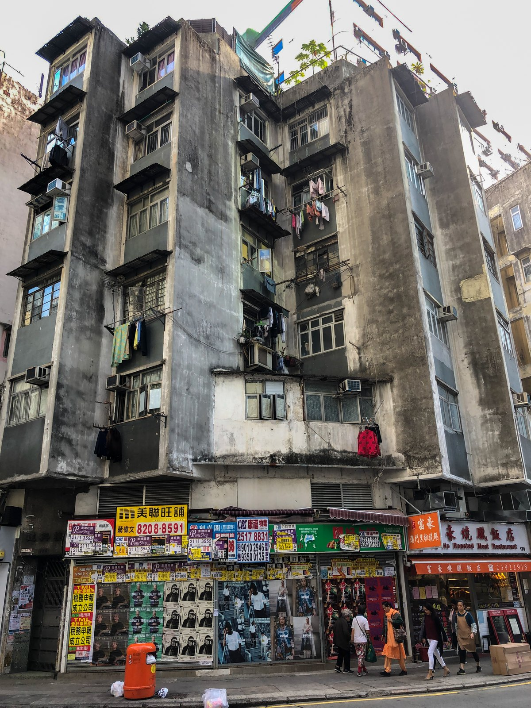
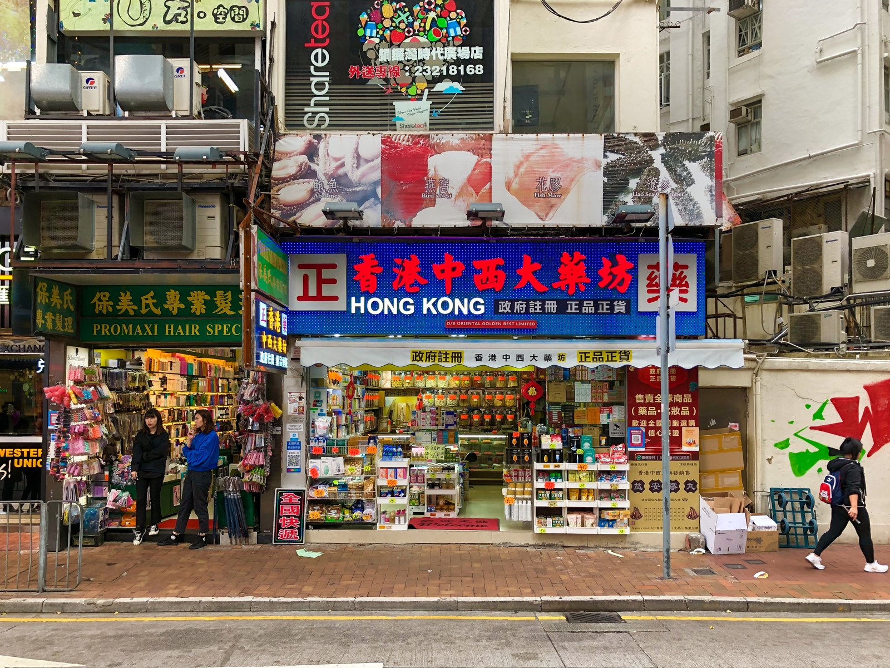
Corner Houses: Hongkongs gebogene Eckhäuser
In der Foo Ming Street in Causeway Bay bin ich vor einem Eckhaus stehen geblieben. Die Fassade ist gebogen, die runden Balkone folgen exakt der Straßenkurve. Solche Corner Houses stammen aus den 1950er- und 60er-Jahren, als Hongkong nach dem Krieg im Rekordtempo wachsen musste. Die Regierung wollte mehr Luft in die engen Wohnungen bringen und rechnete Balkone deshalb nicht auf die Grundstücksabgabe an. An Straßenecken zog man die Balkone einfach um die Kurve. 1966 war damit Schluss, weil viele Eigentümer die Balkone zu vermietbaren Zimmern zugemauert hatten.
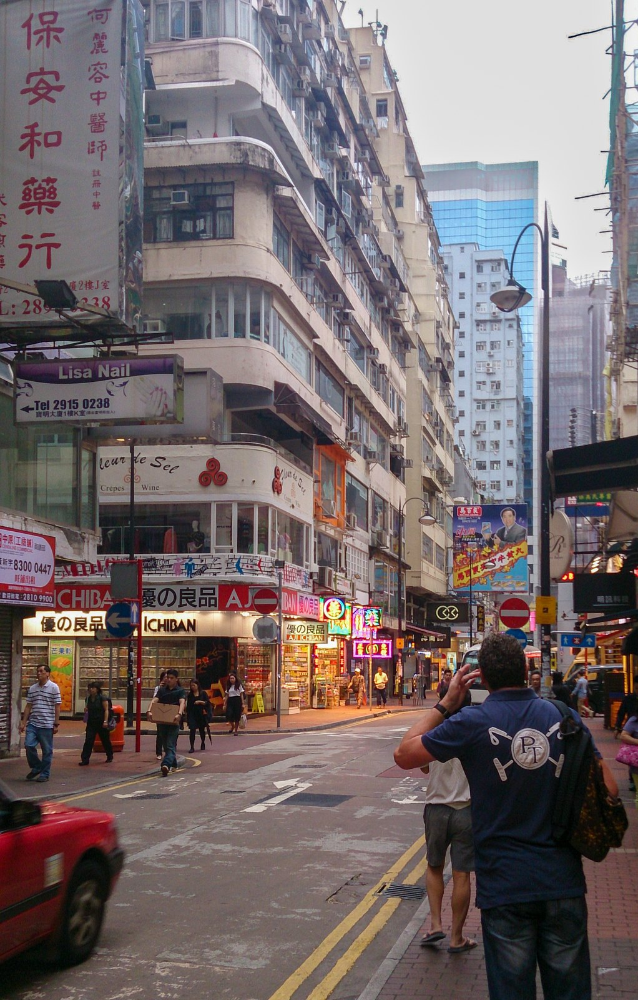
Solche Häuser standen früher überall. In Wan Chai. In Sham Shui Po. In Mong Kok. Viele sind abgerissen. Die übrigen sind in Privatbesitz, und dann schützt sie in Hongkong praktisch nichts. Also habe ich fotografiert. Nächstes Mal könnte hier schon ein neuer Hochhausturm stehen.
Sham Shui Po und Mong Kok
Kowloon hat weniger Hochglanz als Hong Kong Island, dafür ist es dichter und rauer. Alte Tong Lau, chinesische Mietshäuser mit schmalen Fronten und auskragenden Balkonen, drängen sich aneinander. Die einen frisch gestrichen, die meisten gezeichnet von Jahrzehnten.
In den Seitenstraßen von Sham Shui Po überdauern alte Ladenfronten. Metallgitter mit handgemalten Schriftzügen. Kleine Werkstätten im Erdgeschoss. Darüber wird gewohnt. Alles gebaut, um möglichst viele Menschen auf wenig Grund unterzubringen. Nachmittags fällt schräges Licht in die Gassen und zeichnet die Balkone nach.

Tipp: Zu Fuß durch Sham Shui Po und die Nebenstraßen von Mong Kok. Die interessantesten Fassaden stehen selten an den Hauptstraßen.
Admiralty am Sonntag
Sonntags verändert sich Hong Kong Island. Rund um Admiralty und Central sitzen tausende Filipinas und Filipinos auf ausgebreiteten Kartons. Es ist Picknickzeit. Es wird gesungen und Karten gespielt, dazwischen werden die neuesten Instagram-Posts ausgetauscht. Für viele ist es der einzige freie Tag der Woche. In Central wird dafür sonntags die Chater Road für Autos gesperrt.
Ich bin durchspaziert und habe gefragt, ob ich ein Foto machen darf. Zurück kam die Frage, woher ich komme. Dann erzählten sie, was sie in Hongkong arbeiten, und dass es ihnen hier sehr gefällt.
Früh am Morgen gehört Central anderen. Leute, die in Zeitlupe die Arme heben. Was dahintersteckt, steht in Tai Chi in Hongkong.
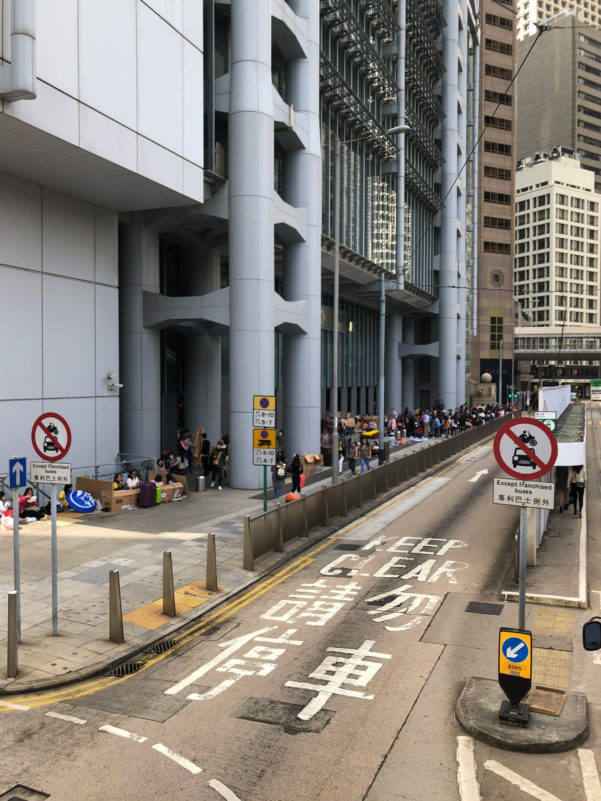
Zehntausend-Buddhas-Kloster in Sha Tin: 431 Stufen
Im Kloster von Sha Tin stehen an die 12.800 Buddha-Figuren. Die goldenen am Treppenweg sehen alle verschieden aus. Davor liegen 431 Stufen, bei gefühlten 30 Grad und subtropischer Luftfeuchtigkeit. Bei Stufe 30 war ich fertig, bei Stufe 431 eine Pfütze mit Kamera. Die Buddhas blieben unbeeindruckt.
Oben saß ein Affe neben zwei goldenen Mönchsstatuen, als gehöre er dazu. Wildes Tier oder Figur Nummer 12.801, schwer zu sagen bei dem Blattwerk im Hintergrund.
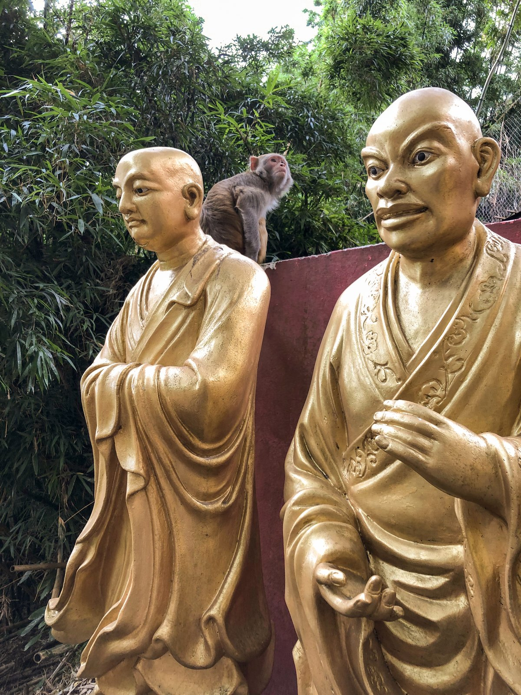
Essen unterwegs
In den Aquarien der Seafood-Restaurants in Kowloon schwimmen Krebse und Fische, bis jemand auf sie zeigt. Dann kommt der Kescher.
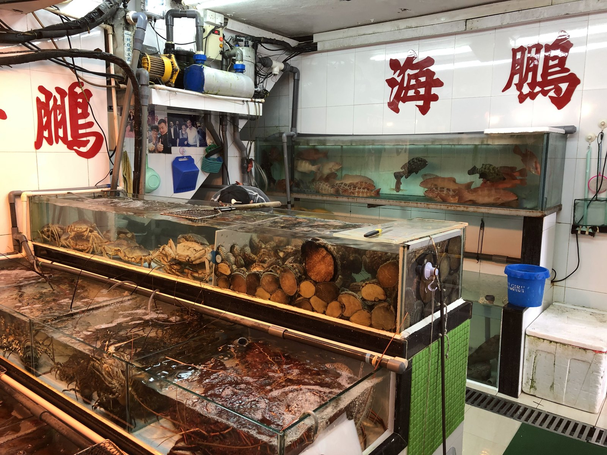
Dazu Dim Sum. Eine Nudelsuppe im Stehen. Eine heiße Eierwaffel auf die Hand, während man auf die Fähre wartet. Gegessen wird im Gehen.
Baden in Hongkong: Repulse Bay, Deep Water Bay, Sai Kung
Bei einem früheren Besuch, im November bei 29 Grad, war ich in der Repulse Bay und in der Deep Water Bay baden. Die Repulse Bay hat feinen Sand und eine ruhige Bucht. Die Deep Water Bay gleich nebenan ist auch sehr schön. Eine Stunde lang die dichte Stadt vergessen.
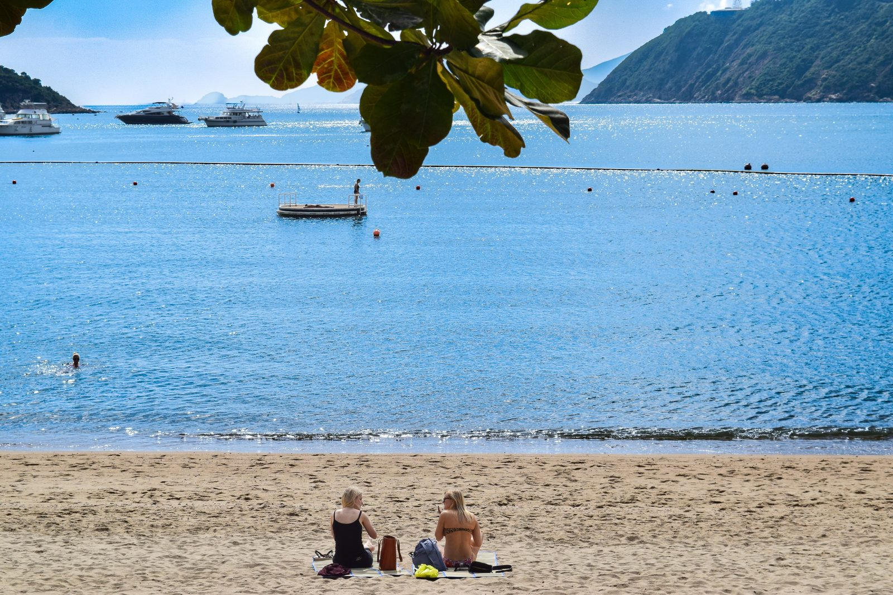
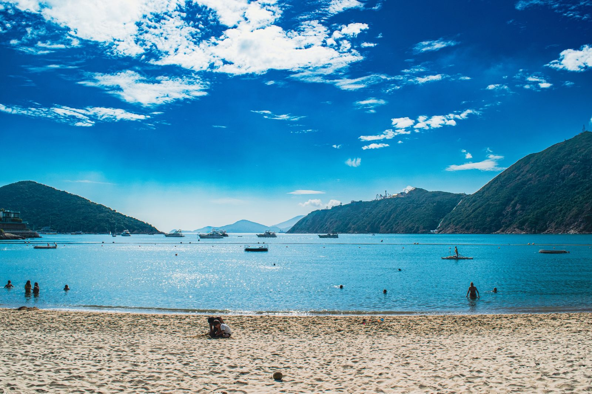
Am Sha Ha Beach in Sai Kung war ich auch baden. Dort gibt es einen Verleih für Kajaks und Windsurf-Ausrüstung, die Boards stapeln sich im Gestell am Strand. Ein Kajak für den ganzen Tag kostete laut Banner 50 Hongkong-Dollar, montags bis freitags.
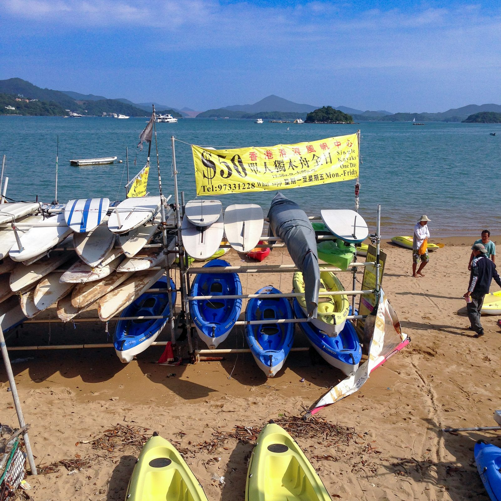
An der Uferpromenade von Stanley steht ein gelbes Haus, das man nicht übersehen kann. Das Boathouse, zwei Wohnhäuser von 1948 und 1951, heute ein Restaurant.
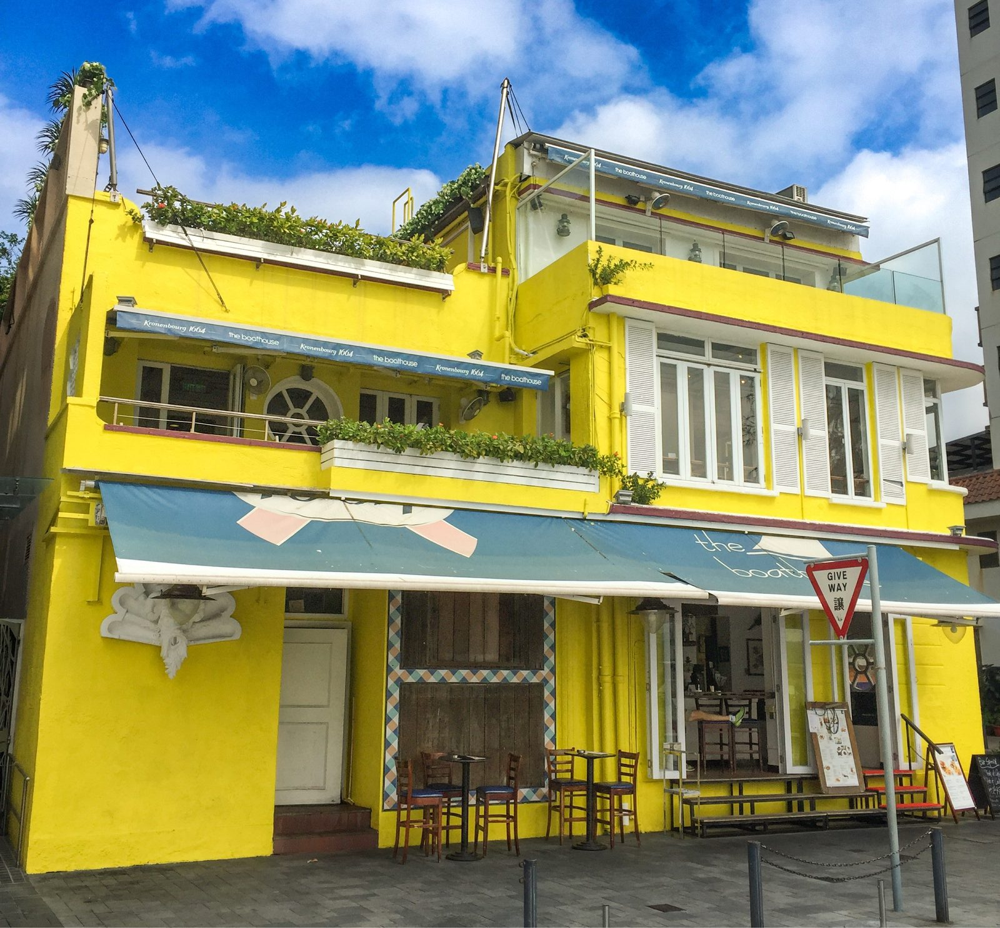

Vor Kowloon fahren Dschunken mit farbigen Segeln durch den Hafen.
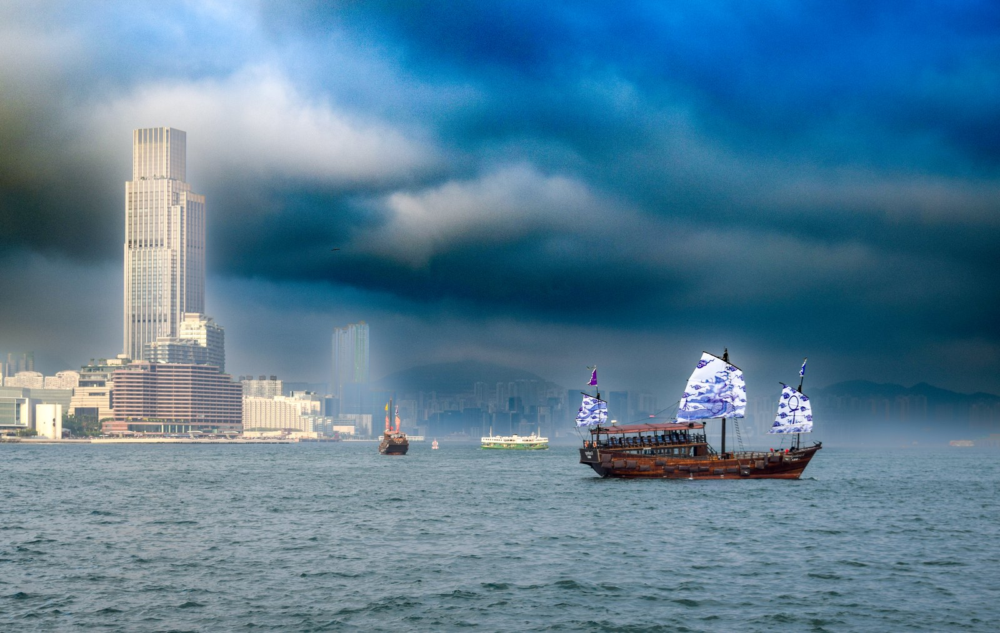
Zurück vor den Chungking Mansions
Beim vierten Besuch stehe ich vor dem Haus, in dem ich einmal zwei Wochen in einer Streichholzschachtel geschlafen habe, und die Trommeln der Parade ziehen an mir vorbei.
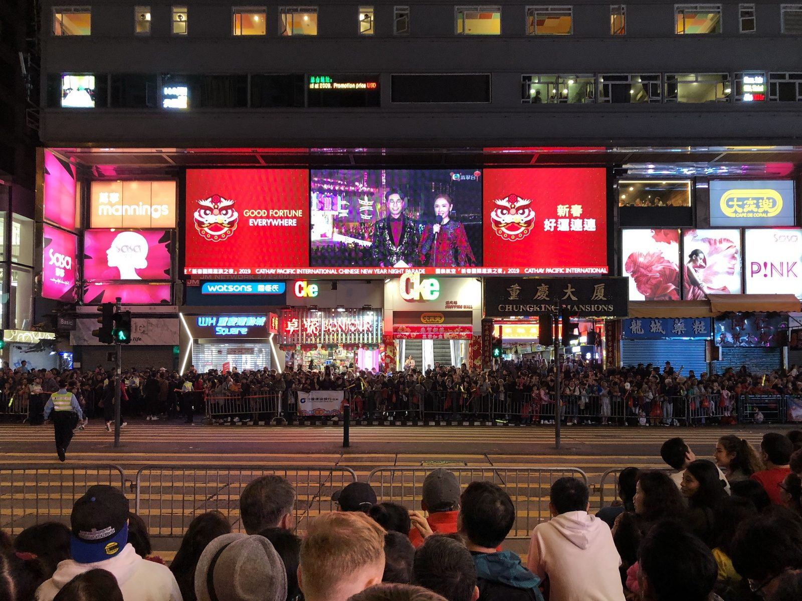
Am Abend danach knallt es dann doch noch. Privates Feuerwerk ist in Hongkong seit den Unruhen von 1967 verboten. Das hier ist offiziell, genehmigt, über dem Victoria Harbour.
Quellen & Recherche
Diese Story basiert nicht nur auf eigenen Erinnerungen. Ein paar Fakten habe ich recherchiert und mit folgenden Quellen abgeglichen. Wer will, kann selbst nachlesen.
- Chungking Mansions, Baujahr, Bauherr, Schätzung Gordon Mathews, Wikipedia
- The World Inside a Building: Chungking Mansions, Zolima City Magazine
- Jaime Chua Tiampo, Developer of Chungking Mansions, The Industrial History of Hong Kong Group
- Hongkongs Corner Houses, Zolima City Magazine
- Hongkongs Hausangestellte am Sonntag, South China Morning Post
- Filipina Domestic Workers at Statue Square, McGill University
- Chater Road am Sonntag, Wikipedia
- Feuerwerksverbot seit 1967, South China Morning Post
- Neujahrsfeuerwerk über dem Victoria Harbour, Wikipedia
- Central Ferry Piers (Star Ferry), Wikipedia
- Zehntausend-Buddhas-Kloster Sha Tin, 431 Stufen, Zahl der Figuren, Wikipedia
- Historic Building Appraisal, The Boathouse Stanley, Antiquities Advisory Board
- Standort Titelbild: Star Ferry Pier, Central (Pier 7), 22.2872° N, 114.1611° O, Wikipedia
- Repulse Bay und Deep Water Bay, Badestrände Bezirk Southern, LCSD Hongkong
- Sha Ha Beach, Kajak- und Windsurf-Verleih, Sai Kung Outdoors
- Sha Ha Water Sports, Blue Sky Sports Club